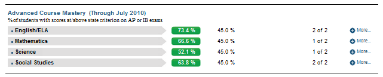

Dashboard Metrics


Advanced Course Mastery
Background
District Dashboard Metrics
Because of the importance of rigorous coursework to postsecondary success and to support district efforts to increase advanced course completion, several districts across the country, including Charlotte, Chicago, Dallas and Oakland, have incorporated into their internal performance management dashboards metrics to monitor advanced course enrollment and performance. In focus group discussions conducted with educators, 95% of those surveyed found advanced course enrollment and performance information useful when reported at the campus level. When reported at the student level, the percent of respondents finding the information useful was notably lower (less than 90%). The implication is that this metric, though still valuable to teachers in preparing their individual students for advanced coursework, may be even more useful to district leaders in developing strategic, district-wide approaches to increasing enrollment and success in advanced courses.
Primary Metric
- Advanced Course Mastery: percent of students who scored at or above the specified criterion on required AP and IB exams in the four core subject areas .
Related Metrics
- Advanced Course Potential: percent of students with demonstrated potential for advanced coursework (based on past state assessment at or above 2400 and PSAT, if taken, performance at greater than or equal to 80th percentile) who are not currently enrolled in advanced courses (AP, IB or DC courses) in the four core subject areas.
- Advanced Course Enrollment: percent of students currently enrolled in at least one AP, IB or dual credit (DC) courses in the four core subject areas, with comparison to campus goal.
- Advanced Course Availability: percent of students with advanced course potential (as defined above) divided by student slots offered in advanced classes by subject area.
- Advanced Course Completion: percent of students who completed at least one AP, IB or dual credit (DC) course in the four core subject areas during prior years, with comparison to campus goal.
User Interface
Figure 1 shows the Advanced Course Mastery metric as seen on the district dashboard.

Figure 1 Ed-Fi District Advanced Course Mastery
Status Definition
“Advanced courses” include AP courses and IB courses. Dual enrollment courses are not included as there are no uniform set of exams used to determine mastery.
The Status column is the percentage of students that scored at or above the state criterion on all of the AP and IB exams taken in ELA, mathematics, science, and social studies in the most recent year.
The Status indicator is determined by district
The Ed-Fi default threshold is 45%
Table 2 defines the Status indicators.
The actual percentage is displayed with the indicator.
Table 2 Metric Status Indicator for Ed-Fi District Advanced Course Mastery | |||||
Metric Status Indicator | Comparisons | ||||
Metric Name | Sub-metric Name | Metric Status Indicator | Trend | Campus Attainment | |
Advanced Course Mastery | ELA | Red (Percentage) = if percentage of students mastering all AP exams (score must be greater than or equal to 3) and IB exams (score must be greater than or equal to 4) in the ELA subject area in the most recent year is less than the district goal Green (Percentage) = if percentage of students mastering all AP exams and IB exams in the ELA subject area in the most recent year is greater than or equal to the district goal | The number of campuses meeting their campus goal over the number of campuses with data for the metric | ||
Mathematics | Red (Percentage) = if percentage of students mastering all AP exams (score must be greater than or equal to 3) and IB exams (score must be greater than or equal to 4) in Mathematics for the most recent year is less than the district goal Green (Percentage) = if percentage of students mastering all AP course exams and/or IB exams in Mathematics for the most recent year is greater than or equal to the district goal | The number of campuses meeting their campus goal over the number of campuses with data for the metric | |||
Science | Red (Percentage) = if percentage of students mastering at least one advanced course (score must be greater than or equal to 3) or IB (score must be greater than or equal to 4) in the most recent year is less than the district goal Green (Percentage) = if percentage of students mastering at least one advanced course or IB in the most recent year is greater than or equal to the district goal | The number of campuses meeting their campus goal over the number of campuses with data for the metric | |||
Social Studies | Red (Percentage) = if percentage of students mastering at least one advanced course (score must be greater than or equal to 3) or IB (score must be greater than or equal to 4) in the most recent year is less than the district goal Green (Percentage) = if percentage of students mastering at least one advanced course or IB in the most recent year is greater than or equal to the district goal | The number of campuses meeting their campus goal over the number of campuses with data for the metric | |||
Trend Definition
Trend Indicators: Objective is to indicate Advanced Course Mastery | |||
| Up green |
| If the value for the current time frame is more than 5 percentage points higher than the prior time frame, then display a gray arrow trending upward. |
| Unchanged | If the value for the current time frame is less than or equal to 5 percentage points higher or less than or equal to 5 percentage points lower, then display two gray arrows pointing outward indicating no direction. | |
| Down red | If the value for the current time frame is more than 5 percentage points lower than the prior time frame, then display a gray arrow trending downward. | |
The trend does not show for the first occurrence of a time frame since data is not available.
Delta Definition
The delta appears only in the campus list and displays the individual campus goals rather than the district goal.
Table 4 Delta Indicator for Ed-Fi District Advance Course Mastery Metric | |||
Metric Name | Sub-Metric Name | Campus Goal | Delta |
Advanced Course Mastery | ELA | Set campus goal | Red (Delta Percentage) = if the calculated percentage of students mastering all AP course and IB exams is less than the campus goal Black (Delta Percentage) = if the calculated percentage of students completing all AP and IB exams is greater than or equal to the campus goal |
Mathematics | Set campus goal | Red (Delta Percentage) = if the calculated percentage of students mastering at least one advanced course or IB is less than the campus goal Black (Delta Percentage) = if the calculated percentage of students completing at least one advanced course or IB is greater than or equal to the campus goal | |
Science | Set campus goal | Red (Delta Percentage) = if the calculated percentage of students mastering at least one advanced course or IB is less than the campus goal Black (Delta Percentage) = if the calculated percentage of students completing at least one advanced course or IB is greater than or equal to the campus goal | |
Social Studies | Set campus goal | Red (Delta Percentage) = if the calculated percentage of students mastering at least one advanced course or IB is less than the campus goal Black (Delta Percentage) = if the calculated percentage of students completing at least one advanced course or IB is greater than or equal to the campus goal | |
Periodicity
Table 5 Recommended Load Characteristics for Ed-Fi District Advanced Course Mastery Metric | |
Recommended Load Characteristics | |
Calendar | Beginning and end of school year |
Frequency of data load | Twice a year |
Latency | 7-8 months |
Interchange schema | Interchange-StudentGrades.xsd |
Tooltips
The standard tooltips for the metric definition, column headers, and help functions display for this metric.
 is ‘No change from the prior period'
is ‘No change from the prior period' is ‘Getting worse from the prior period’
is ‘Getting worse from the prior period’ is 'Getting better from the prior period'
is 'Getting better from the prior period'
Business Rules
The Advance Course Mastery metric is the percentage of current students mastering (scoring at or above state-defined criterion) all of their AP and IB exams taken in the most recent school year for the following subject areas:
¨ ELA
¨ Mathematics
¨ Science
¨ Social Studies
Mastery of an AP subject is defined as earning a score of 3 or greater. For IB courses, the mastery of a subject is defined as earning a score of 4 or more.
Data Assumptions
“Advanced Courses” are those in which a nationally or internationally accredited exam is taken:
¨ AP courses
¨ IB courses
Computed Values
The following calculation must be performed for each core subject area (ELA, Mathematics, Science and Social Studies) to determine the percentage of students mastering the course.
Table 6 Calculated Values for Ed-Fi Campus Advanced Course Mastery Metric | |
Metric | Calculation |
Advanced Course Mastery | (Total of all current students who mastered all AP and IB exams taken in the most recent school year / (Total of all current students that took one or more AP or IB examinations in the most recent school year) |
Data Anomalies
Missing Transcript
A student may have missing transcript data in which an AP or IB examination may have been taken in a prior year. This campus metric only pertains to the most recent year.
Some files from the examination providers do not include critical data that is required for precise matching of students (e.g., social security number, date of birth). In these instances, there may be duplicate names and manual intervention is required to assign students to their data
Date of Refresh
Best practice is for the date of last data refresh to appear next the metric in the following format:
- (Through May 2010)
Implementation Considerations
Student Identity
Maintaining a correct and consistent student identity is at the center of any education data system. Most systems use some sort of unique identifier. However, sometimes this identifier is entered incorrectly or sometimes different systems use different identifiers.
The UDM XML supports the interchange of multiple types of identifiers. The StudentReference is a complex type within the UDM to maintain the referential integrity of the student (that is, ensuring that the data associated with each student is accurately associated with the right student). The complex type of the student reference assists with implementing the accurate matching algorithm to identify a student by utilizing any of the individual attributes (e.g., Student Unique State ID, Student ID, Campus Local ID (with Campus ID), Name and Birth Date). For example, if the Student Unique State ID is unknown, you can find the student’s identity by their Student ID, First Name, Last Name and Birth Date.
Transfer Students (Late Enrollments)
Transfer students may not have complete transcripts from which to identify prior year advanced courses or mastery exams.
Advanced Course Definition
Best practice is for developers to ensure the definition of the exact courses that qualify as “advanced” include AP and IB courses, as well as those defined as advanced by both the state and locally defined by the district. This mapping looks at the course characteristic type as coded locally. In the case of courses that are both AP and another type such as GT, the course should have the characteristic type of AP. If the other characteristic is recorded, the course will not appear as 'advanced.'
Aggregate Metric Inclusions and Exclusions of Special Education Students
Each campus's aggregate metrics may include or exclude the special education population, depending on the intended purpose for a specific metric and campus goal. This may affect the district metric.
Drill Downs
Drill Down Views
The dashboards include the option to see more detail that is associated with a metric. Table 7 lists the drill down views that are recommended for this metric.
| Campus List | List of campuses and whether or not they meet their goal for this metric for the specified period. |